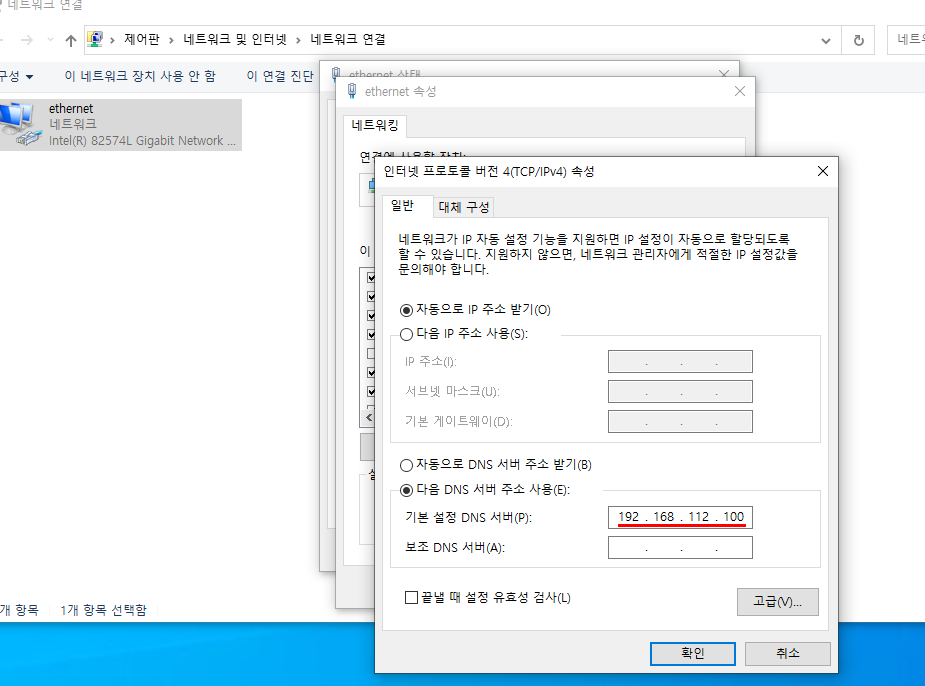

[Shell Script] 이것이 우분투 리눅스다. 9장 자동설치하기
1. "이것이 우분투 리눅스다" 책소개
안녕하세요. 이번 글에서는 우재남 저자께서 지으신 "이것이 우분투 리눅다"라는 책의 내용에 관하여 작성하였습니다.
2. 9장 [네임 서버 설치와 운영]
책에서 9장 [네임 서버 설치와 운영]에 관하여 책에 있는 내용 순서대로 진행하는 방식으로 코딩하였습니다.
자세한 내용은 "이것이 우분투 리눅스다" 책의 9장을 참고하시기 바랍니다.
이 코드를 만들게 된 이유는 제가 실습 과정 중 오타가 발생하여 마지막 결과에 작동하지 않는 문제가 발생했었습니다.
과정을 이해하고 따라하다가도 결과는 작동하지 않는 경우도 많이 목격하였습니다. 그래서 bash 파일로 간단한 제어문과 명령어로 결과를 빠르게 도출할 수 있는 코드를 만들었습니다.
2. 네임서버 & ftp 서버 설치하기
저는 리눅스를 따로 컴퓨터에 설치하고 있지 않아서 VMWare를 이용하였습니다. 네임서버를 구축하고 실습하기 위해 컴퓨터가 최소 3대가 필요합니다.
- wget https://chauid.github.io/Linux/09/server.sh
Server 컴퓨터에서 wget 명령어를 사용하여 깃허브에 원격 저장소에서 server.sh를 다운받습니다.
Server(B) 컴퓨터에서도 ServerB.sh 파일을 다운받아 줍니다.
이제 bash 명령어로 실행시켜 줍시다. dash나 sh 명령어를 사용해도 됩니다.
스크립트 파일이 알아서 잘 설치해주는 것을 볼 수 있습니다. server(B) 컴퓨터는 한글 설치를 하지 않는다고 가정하여 파일의 출력을 모두 영어로 했습니다.
Server 컴퓨터에서도 bash 명령어로 실행해 줍니다. 패키지 파일을 먼저 체크하고 없으면 설치하도록 코딩하였습니다.
프로그램 설명이 궁금하시다면 wget https://chauid.github.io/09/Chapter09-todolist.txt 으로 다운받아서 참고하세요.
프로그램의 순서는 책을 참고하세요.
ftp서버를 구축할 Server(B) 컴퓨터의 IP를 확인해 줍시다. Server 컴퓨터가 네임서버가 되어서 ftp서버로 연결해줄 겁니다.
웹페이지의 제목은 Hello_Server로 설정해줬습니다. 도메인은 hellohello로 설정해 줬습니다. 이제 Server 컴퓨터의 IP를 네임서버로 사용하는 모든 컴퓨터에서 hellohello.com 웹페이지에 접속할 수 있습니다.
설치가 완료된 모습입니다. 이제 Client 컴퓨터와 Windows 컴퓨터로 DNS서버를 Server의 IP로 지정하여 네임서버의 작동을 확인해보겠습니다.
3. 클라이언트로 네임서버 작동 확인하기
Clinet 컴퓨터의 DNS서버 주소를 Server 컴퓨터의 IP주소로 설정해 줍니다.
이제 주소창에 hellohello.com 입력하여 접속해 봅시다.
hellohello.com으로 잘 접속하는 것을 확인할 수 있습니다.
이제 Windows 환경에서도 적용해 보겠습니다.

Windows 컴퓨터에서도 DNS서버의 주소를 Server 컴퓨터의 IP로 설정해줍니다.
Windows 컴퓨터에서도 hellohello.com에 잘 접속되는 것을 확인할 수 있습니다.
ftp서버도 잘 작동하는 것을 확인할 수 있습니다. 환영메세지는 ServerB.sh의 파일을 수정하거나 /srv/ftp/welcome.msg를 수정하면 바꿀 수 있습니다.
네임서버의 설치 및 운영에 대해서 알아보았습니다. 다음 글에서는 10장 [메일 서버 설치와 운영]에 대해서 알아보겠습니다.